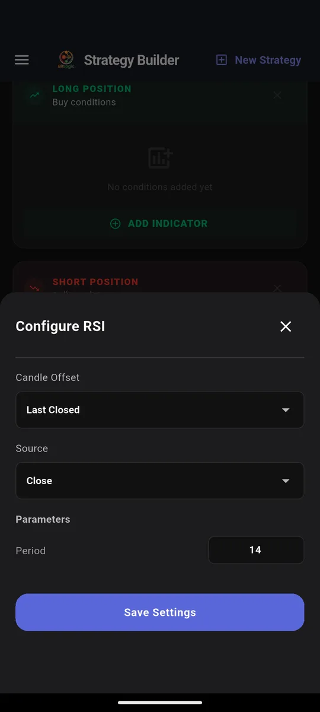
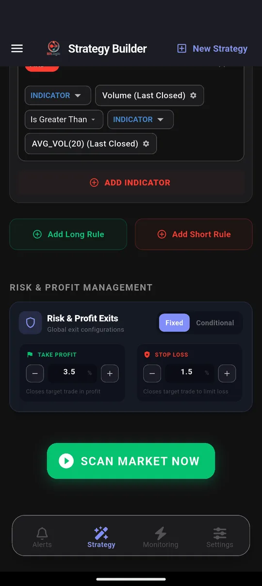

Kraken Crypto Screener: How to Scan Every Kraken Pair for Setups
Quick answer: Kraken Pro gives you price, volatility and watchlist alerts, but it has no technical screener. It can't tell you which of its pairs have RSI below 30 or a fresh EMA crossover right now. BitLogic fills that gap. It scans the 400 most-traded Kraken pairs against rules you build and alerts you when one matches.
BitLogic is a no-code crypto screener and alert app for Android and Windows, with a free web screener. It scans every pair on an exchange against rules you build and sends matches as push notifications, or as Telegram messages on Pro.
Features, availability and test results checked 26 September 2026.
Does Kraken Pro Have a Screener?
Not a technical one. Kraken Pro's alerts are built around price:
| Kraken Pro alert | What it watches | Limit |
|---|---|---|
| Price alerts | One market reaching a price you set | One level, one market at a time |
| Volatility alerts | Unusually large moves in markets you have favorited | Favorited markets only; no indicator logic |
| Watchlist alerts | Big 24-hour price changes across your watchlist | Price movement only |
None of them can express "RSI below 30 on the 1-hour", "EMA 9 crossed above EMA 21" or "volume twice its 20-candle average". None of them look at pairs you haven't already added to a watchlist. That is the job a screener does: you describe the setup once, and it checks every pair. (Source: Kraken Support on market alerts and watchlist alerts.)
Can You Use Kraken in Your Country?
Kraken is the rare exchange that is licensed or registered in all five of these markets:
| Country | Kraken status |
|---|---|
| United States | Available in most states |
| United Kingdom | Available (FCA-registered). Retail customers can't trade crypto derivatives under FCA rules |
| Canada | Available. Registered as a restricted dealer with Canadian securities regulators |
| Australia | Available |
| Germany | Available. MiCA-licensed through the Central Bank of Ireland |
That makes Kraken a sensible home exchange for screening wherever you live. In Canada it is the natural choice: Binance, Bybit and OKX left the Canadian market in 2023, and Bitstamp followed in January 2024. Kraken's licensing page has the current details for your region.
How to Screen Kraken in BitLogic
Step 1: Pick Kraken and a market
Open the Strategy tab, choose Kraken, then Spot or Futures. Spot covers Kraken's USD and USDT pairs. Futures reads Kraken's perpetual contracts.

The volume filter matters on Kraken. Kraken lists more than 700 USD and USDT pairs, and plenty of them trade very little. Setting a minimum of $2 million per day keeps the results to pairs you could actually trade.
Step 2: Build the rule
A rule is a chain of conditions, and every condition must be true for a pair to match. This one wants a short-term uptrend inside a long-term uptrend, with rising volume:

Each indicator has its own settings: period, source, and which candle to read. Last Closed reads the candle that just finished, so a signal can't vanish before the candle closes.

Step 3: Set exits
Every match comes with an entry, a take-profit and a stop-loss, calculated from the percentages you choose:

Step 4: Scan
Tap Scan Market Now. Here is a real Kraken run:

Step 5: Turn the scan into an alert
Live Monitoring re-runs the same strategy in the background (every 1, 5, 15 or 30 minutes, every 1 or 4 hours, or once a day) and notifies you when a new pair matches, even with the app closed. You can monitor up to five strategies at once. On Pro, the same alerts also go to Telegram: tap Connect Telegram, press Start in the bot, and you are done.

Screen Kraken free on Google Play, or on Windows.
What One Kraken Scan Found
We ran the same rule twice on Kraken Spot, 1-hour candles, on 26 September 2026:
| Run | Pairs checked | Time | Matches |
|---|---|---|---|
| No volume filter | 400 | 64 s | 89 |
| Minimum $2M daily volume | 400 | 104 s | 8 |
The difference is the lesson. Without a volume filter, the list filled with thinly traded tokens. With it, eight liquid pairs remained, including ENA, XPL and PUMP: pairs where the entry price is one you could actually get.
These are scan results, not recommendations. A match means a pair met the rule at that moment, nothing more.
Three Kraken Rules Worth Building
All three use indicators and comparisons available in the app today.
1. Trend pullback
IF RSI(14) [1h, Last Closed] Is Less Than 40
AND Close [1h] Is Greater Than EMA(200) [1h]This finds pairs that have cooled off in the short term while the long-term trend still points up.
2. Breakout with volume
IF Close [4h, Last Closed] Crosses Above Bollinger Band upper (20, 2)
AND Volume [4h] Is Greater Than Volume SMA(20) × 1.5A close outside the upper band only counts if volume confirms it.
3. Oversold reversal candle
IF Hammer [4h, Last Closed] Is Bullish
AND RSI(14) [4h] Is Less Than 35This catches a reversal candle that forms while momentum is already stretched.
Want either of two setups to trigger the same alert? Add a second Long rule. BitLogic checks each rule separately and alerts if any rule matches.
Kraken Timeframes in BitLogic
| Market | Timeframes |
|---|---|
| Kraken Spot and Futures | 1m, 5m, 15m, 30m, 1h, 4h, 12h, 1d, 1w |
Kraken doesn't publish 2-hour or 6-hour candles, so those don't appear for Kraken.
What BitLogic Won't Do on Kraken
- It won't trade. BitLogic never asks for Kraken API keys. It reads public market data only, and you place trades yourself.
- It isn't a charting tool. For drawing and deep chart work, keep your exchange's charts or TradingView. See the free TradingView alternative guide for how the two fit together.
- No iPhone app yet. BitLogic runs on Android and Windows, with a basic web screener. The interface is in English.
FAQ
Is there a screener on Kraken Pro?
No. Kraken Pro offers price, volatility and watchlist alerts, but no screener that filters pairs by technical indicators. BitLogic adds that by scanning up to 400 Kraken pairs against rules you build.
Can I get RSI alerts for Kraken?
Yes, with BitLogic. Build a rule such as RSI(14) below 30 on the 1-hour candle, turn on Live Monitoring, and BitLogic notifies you when any Kraken pair matches.
Does BitLogic need my Kraken API key?
No. BitLogic reads Kraken's public market data only and never places trades, so there is no key to create or protect.
Does BitLogic work with Kraken in Canada?
Yes. BitLogic reads Kraken's public data from anywhere, and Kraken is registered with Canadian securities regulators. It's the natural exchange to screen if you trade from Canada.
How much does BitLogic cost?
Scanning, the rule builder, Live Monitoring and push alerts are free. Guests get 3 scans per 24 hours, and a free account raises that limit. Pro adds Telegram delivery, unlimited scans, an ad-free app and priority support, with a 14-day free trial. Pro is priced in your local currency on Google Play.
The Bottom Line
Kraken Pro tells you when a price is hit. It can't tell you which of Kraken's hundreds of pairs just set up. A screener can. Write the rule once, filter out illiquid pairs, and let Live Monitoring watch Kraken for you.
Download BitLogic free on Google Play and point your first rule at Kraken.
Nothing here is financial advice. Scan results show what met a rule at one moment; they are not trade recommendations. Exchange availability changes, so check your exchange's terms for your country.